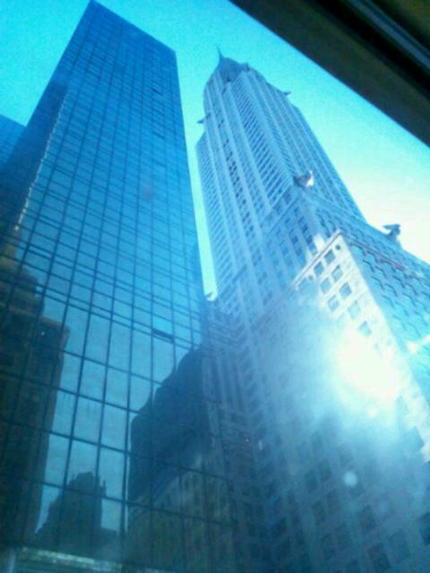

2012/0422Sunやったやった〜っ(o・・o)
こんばんごっ(o・・o)
さゆりんごっ(o・・o)
松村沙友理んごで
ありますえ〜(*´ー｀*)
乃木坂浪漫の感想
ありがとうございます♪
着物きれたん嬉しかった〜o(*⌒―⌒*)o
次は 月曜日!!
お楽しみに☆
そして
乃木坂４６の
おいでシャンプーが
HTC ＪのＣＭ曲に！
ＣＭの撮影で
ニューヨークに行かせていただきました。
すみません。
ってわけで
写真！
ほいっ！

ビルぅぅぅぅぅぅぅぅぅぅぅぅぅぅぅ！
高かった〜(*´ー｀*)
ＣＭお楽しみに♪
HTC Ｊは
機械音痴のまっつんでも
簡単に操作出来たよ〜o(*⌒―⌒*)o
あんね〜
写真ほんまに綺麗やし
音も臨場感たっぷりやし
ほんまにすごいんよ〜♪(ｏ・ω・)ノ))
大人に言わされてるん
ちゃうからねww
明日は大分に行くらしいです。
大雨らしいです。
大丈夫かしら><
ご挨拶頑張ります！
受け入れてくださったら
喜ばしい限りですね♪ヽ(・∀・)ノ
ほなら、またね♪
前の記事
へばなって使ったら
結構突っ込まれた!!
ちなみに
生駒っちに
使用許可は
とってません。どーん
ほなら
したっけね〜っ(o・・o)/~
2012/04/22 05:36
コメント(347)
NYすげー(゜-゜*
指原がNYにCM撮影って聴いて
自信無くしてたぜ(・∀・)
乃木坂の勝ちだね(・ω・*
りんご好き
ニューヨークうらやましい！
土産頼んでおけばなｗｗ
土産頼んでおけばなｗｗ
おはりんごっ(o・・o)
最近コメントできてなくてゴメンね(≧≦)
CM決定おめでとう!!
ニューヨークいいな～
まさに摩天楼やね！
見事な宣伝ありがとう笑
CM楽しみにしてるね(^∀'*)
今は大分だよね？
シャンプー配り頑張ってね！
へばなっ
じゃなくて
ほな～
最近コメントできてなくてゴメンね(≧≦)
CM決定おめでとう!!
ニューヨークいいな～
まさに摩天楼やね！
見事な宣伝ありがとう笑
CM楽しみにしてるね(^∀'*)
今は大分だよね？
シャンプー配り頑張ってね！
へばなっ
じゃなくて
ほな～
こんにちりんごっ！
まっつんからまっつんへw
そのニューヨークのビルは行ったことあるぞ～
羨ましいな。また行きたいニューヨーク。
HTCもどんなCMか楽しみにしてるな！
大分でシャンプー配りかwww
頑張ってね～ツイッターで見てるから。
ほんならまた～！
まっつんからまっつんへw
そのニューヨークのビルは行ったことあるぞ～
羨ましいな。また行きたいニューヨーク。
HTCもどんなCMか楽しみにしてるな！
大分でシャンプー配りかwww
頑張ってね～ツイッターで見てるから。
ほんならまた～！
さゆりん久しぶり♪ヽ(´▽｀)/
ニューヨークのビル高い！！(゜ロ゜ノ)ノ自分田舎育ちだから、こんなの見たことないわ…
色んな番組にさゆりん出てて嬉しいです。これからは歌番組も色々出ますよね？楽しみにしてます♪ヽ(´▽｀)/
では、へばな(笑)(￣∇￣*)ゞ
ニューヨークのビル高い！！(゜ロ゜ノ)ノ自分田舎育ちだから、こんなの見たことないわ…
色んな番組にさゆりん出てて嬉しいです。これからは歌番組も色々出ますよね？楽しみにしてます♪ヽ(´▽｀)/
では、へばな(笑)(￣∇￣*)ゞ
さゆりんの浪漫次も見るねー
ニューヨークいいなぁー
最近海外行ってないから行きたいよー
今シャンプー配り中かな？
がんばってねっ
ニューヨークいいなぁー
最近海外行ってないから行きたいよー
今シャンプー配り中かな？
がんばってねっ
さゆりんこんにちは♪
ニューヨークとか
うらやまです(^U^)
行ってみたいなー(笑)
今日のイベも顔晴って
ください(^ω^)♪
ニューヨークとか
うらやまです(^U^)
行ってみたいなー(笑)
今日のイベも顔晴って
ください(^ω^)♪
NYうらやまりんご！
今日大分なんでしょ！？
様子教えてね～
 Masaki
Masaki
今日大分なんでしょ！？
様子教えてね～
さゆりん(*´ω｀*)
更新待ってましたー！！
HTC Jの件おめでとう(v^-゜)
cm楽しみにしてるo(^-^)o
早く見たいよー！！
ぁ、かずみんblogに
さゆりんとの写真載ってた！
めっちゃかわゆかった(^q^)
さゆりん大好きよ(*^o^*)
更新待ってましたー！！
HTC Jの件おめでとう(v^-゜)
cm楽しみにしてるo(^-^)o
早く見たいよー！！
ぁ、かずみんblogに
さゆりんとの写真載ってた！
めっちゃかわゆかった(^q^)
さゆりん大好きよ(*^o^*)
p.s
自分もニューヨークいったことあるよ
ニューヨークはやたら人が多かった記憶が.....笑
あ、写真はエンパイヤーステートビル？だね
たぶん あってるよね←自信ない笑
このビル上ったことあるよーーーー
結構いい景色だった
大分でのシャンプー配り頑張ってください
ニューヨークはやたら人が多かった記憶が.....笑
あ、写真はエンパイヤーステートビル？だね
たぶん あってるよね←自信ない笑
このビル上ったことあるよーーーー
結構いい景色だった
大分でのシャンプー配り頑張ってください
ＣＭ撮影お疲れさま!!
CM早く見たい(≧ω≦)
大分雨だけど風邪引かないようにね(・∀・)ノ
こんにちは♪
乃木坂浪漫の着物姿サイコーでした(≧∇≦)
早く次が見たい(>_<)
ニューヨークいったの！
俺も一度は行ってみたいなぁー
大分のイベントがんばってね♪
乃木坂浪漫の着物姿サイコーでした(≧∇≦)
早く次が見たい(>_<)
ニューヨークいったの！
俺も一度は行ってみたいなぁー
大分のイベントがんばってね♪
さゆりんごー大分県行けませーん！ゴメン。
CM出演おめでとう。自分の事のように嬉しいっす！ニューヨークばんざい！
私事ですが、さゆりんごに夢で襲われました。ものすごい怖かったっす… 今度はイイ感じに夢に登場してください。笑
シャンプー配り頑張れ～！
CM出演おめでとう。自分の事のように嬉しいっす！ニューヨークばんざい！
私事ですが、さゆりんごに夢で襲われました。ものすごい怖かったっす… 今度はイイ感じに夢に登場してください。笑
シャンプー配り頑張れ～！
どーも♪
めんくるです♪
ニューヨークいいっすね(^0^)/
ビルぅぅぅぅぅぅぅぅぅぅぅぅぅぅぅ！笑
おいでシャンプーのPV良かったです♪みんな可愛くて♪とくにさゆりん!!笑
お仕事頑張ってください！
めんくるです♪
ニューヨークいいっすね(^0^)/
ビルぅぅぅぅぅぅぅぅぅぅぅぅぅぅぅ！笑
おいでシャンプーのPV良かったです♪みんな可愛くて♪とくにさゆりん!!笑
お仕事頑張ってください！
ニューヨーク行きたいっ(>_<)
今年のニューヨークのバスケはいろいろあって大盛り上がりだったんですぜ(￣∀￣)ｂ
月曜日楽しみにしてます(*^o^*)
さゆりん、久しぶり(。・_・。)ノ
ブログ楽しみに更新待ってるよ☆これからも楽しいブログよろしく(・∀・)
へばな！www
大分でのPRがんばってね！
最近おいでシャンプーの発売が待ちきれないよー＼(^o^)／
最近おいでシャンプーの発売が待ちきれないよー＼(^o^)／
海外なんてすごいっすね(^O^)
さゆりん
英語しゃべれるの??
早くＣＭ観たいっす(*゜▽゜*)
(☆￣▽￣)けーご。
さゆりん
英語しゃべれるの??
早くＣＭ観たいっす(*゜▽゜*)
(☆￣▽￣)けーご。
大分シャンプー配り
頑張りんごっ(o・・o)！
浪漫楽しみー(=゜ω゜)ノ！
頑張りんごっ(o・・o)！
浪漫楽しみー(=゜ω゜)ノ！
さゆり～ん
おはりんご☆
大分飛びたかったよ～
shampoo配ってるんやろ～
さゆりんからもらいたかったなぁ♪
大変やと思うけど頑張ってなぁ☆
また来週の大阪で会おうなぁ(^^)
今日も1日がんばりんご♪
おはりんご☆
大分飛びたかったよ～
shampoo配ってるんやろ～
さゆりんからもらいたかったなぁ♪
大変やと思うけど頑張ってなぁ☆
また来週の大阪で会おうなぁ(^^)
今日も1日がんばりんご♪
こんにちは！
月曜日楽しみにしてます(^^)
ビル高いですね(゜∇゜)
自分もニューヨーク行ってみたいです☆
大人に言わされてなくてよかったですｗ
したっけね?(笑)
月曜日楽しみにしてます(^^)
ビル高いですね(゜∇゜)
自分もニューヨーク行ってみたいです☆
大人に言わされてなくてよかったですｗ
したっけね?(笑)
さゆりん&iF9A9;こんにちわんこそばんそーこー(*^O^*)HTCJのCMおめでとう&iF9A4;&iF99F;&iF9CF;&iF99F;&iF9A4;
おいでシャンプーはもちろん近所のTSUTAYAで予約したよ&iF9CC;
乃木坂ロマンももちろん予約したよ&iF9F8;
また楽しみにしてますよ！
おいでシャンプーはもちろん近所のTSUTAYAで予約したよ&iF9CC;
乃木坂ロマンももちろん予約したよ&iF9F8;
また楽しみにしてますよ！
まっつん、おはよう‼
乃木坂浪漫楽しみやあ( ´ ▽ ` )ﾉ
そういえば有吉AKB見たで！
「スッポン」めっちゃセクシーやった(^^)
今度の大阪個別行くから言ってなw
乃木坂浪漫楽しみやあ( ´ ▽ ` )ﾉ
そういえば有吉AKB見たで！
「スッポン」めっちゃセクシーやった(^^)
今度の大阪個別行くから言ってなw
したっけねーは北海道の言葉w
つい最近iPhoneにしたばかり…。
今日の大分雨の中大変そうだけど
頑張ってね！
山梨から応援してます。
お久しぶりさゆりん！
HTC J使ってないけどHTC使ってるから乃木坂がCM出ると聞いて沸きました！
ニューヨークまでいったんだ。すごいね～かなり大がかりなCMなんだね！
楽しみにしてるよ！
HTC J使ってないけどHTC使ってるから乃木坂がCM出ると聞いて沸きました！
ニューヨークまでいったんだ。すごいね～かなり大がかりなCMなんだね！
楽しみにしてるよ！
こんにちはっー！！
乃木坂浪漫チェックしますねー！！
ニューヨークはどうでしたか！？
なにせ行ったことがないところなのでどんなところかも検討がつかないです。。。
あ！
ビルが高いことが分かりました 笑
ＣＭのオンエア楽しみにしてます♪
大分は大雨なのですか！？
風邪を引かないように気を付けてくださいー＞＜
乃木坂浪漫チェックしますねー！！
ニューヨークはどうでしたか！？
なにせ行ったことがないところなのでどんなところかも検討がつかないです。。。
あ！
ビルが高いことが分かりました 笑
ＣＭのオンエア楽しみにしてます♪
大分は大雨なのですか！？
風邪を引かないように気を付けてくださいー＞＜
ＨＴＣＪのアンバサダー就任おめでとうございます！
乃木坂浪漫楽しみしてますよー＼(^o^)／
挨拶がんばって下さい!!
さゆのんです(^^ゞ
ニューヨークってたんですか！！
CM楽しみです☆
さゆりんがブログ更新してくれたので
嬉しいです♪
ニューヨークってたんですか！！
CM楽しみです☆
さゆりんがブログ更新してくれたので
嬉しいです♪
がんばってくださいませ
おいシャンの握手会仙台にきてください！
さゆりんごちゃん( ´･ω･`)_且~~ ｲｶｶﾞ?
おはようごじゃりまふ★HTC J就任おでめとうございます。CM撮影でニューヨークのタイムズスクエアに行ったんですね～裏山鹿!!!CMが楽しみでふwwばいにー☆
☆:;;:･了:;;:*━━━d(｀･ω･´)ゞ━━━*:;;:解･:;;:☆
おはようごじゃりまふ★HTC J就任おでめとうございます。CM撮影でニューヨークのタイムズスクエアに行ったんですね～裏山鹿!!!CMが楽しみでふwwばいにー☆
☆:;;:･了:;;:*━━━d(｀･ω･´)ゞ━━━*:;;:解･:;;:☆
いやぁ、着物姿、
すっごく美人さんやったよ♪(*^^*)
また、惚れてしまった(^o^ゞ
HTC…
乗り換えようか思案中…
だって、そうなると
携帯会社
変えなきゃなのさぁ(T-T)
すっごく美人さんやったよ♪(*^^*)
また、惚れてしまった(^o^ゞ
HTC…
乗り換えようか思案中…
だって、そうなると
携帯会社
変えなきゃなのさぁ(T-T)
ビルの高さやば(ﾟ▽ﾟ*)！
ニューヨークってホットドック美味しそう♪
ニューヨークってホットドック美味しそう♪
こんにちは。
月曜日の乃木坂浪漫はさゆりんですね。
また着物姿が見れるといいですが
楽しみです。
月曜日の乃木坂浪漫はさゆりんですね。
また着物姿が見れるといいですが
楽しみです。
こんにちは。さゆりん。(^_^ゞ
やったー、さゆりん。さゆりん不足だったよ～。
さゆりんごパワー回復ぅぅ～。
みんなのブログにさゆりん現れたときも回復する
けど、急速充電されたっ。
大分きゃらばんがんばってね。
（雨に負けるな、風に負けるな。）
受け入れてくれるさっ、みんな乃木坂ファミリーに
しちゃおー。
アメリカいってたんだね、グローバルだね。
「おいシャン」タイアップ、期待大。
ＣＭ楽しみ～。
来週の全国握手会に行けるんで、さゆりんに会えるよー。うれしい。さゆりんごパワーをオラに。
ご挨拶がんばってねー。
やったー、さゆりん。さゆりん不足だったよ～。
さゆりんごパワー回復ぅぅ～。
みんなのブログにさゆりん現れたときも回復する
けど、急速充電されたっ。
大分きゃらばんがんばってね。
（雨に負けるな、風に負けるな。）
受け入れてくれるさっ、みんな乃木坂ファミリーに
しちゃおー。
アメリカいってたんだね、グローバルだね。
「おいシャン」タイアップ、期待大。
ＣＭ楽しみ～。
来週の全国握手会に行けるんで、さゆりんに会えるよー。うれしい。さゆりんごパワーをオラに。
ご挨拶がんばってねー。
更新無かったから、何かあったのでは?と心配してたけどニューヨーク行ってたんですね。安心しました。今日は、大分ですか？アイドルは、大変だなぁ。
ドコでも寝れるタイプなのかな？
移動中に休んでおかないとキツイよな。
カラダ気を付けて下さい。
ドコでも寝れるタイプなのかな？
移動中に休んでおかないとキツイよな。
カラダ気を付けて下さい。
おはよう！
さゆりんごっ(*^▽^*)☆
NYでのCM撮影お疲れさまでした！
乃木坂が海外に進出(・∀・)
これは最高だわ!!
写メのビルも下から撮ると迫力満点だね♪
さゆりんごも一緒に映ると、さらに素敵な絵になるのに(´ω`)
「言わされてるんちゃうからね」←なんだか可愛すぎって思ったよ、ガチで(*-∀-)
俺も大分にいたら、絶対に応援しちゃう！
逆方向の北海道に住んでるけど…笑
さゆりんごもメンバーみんなも風邪には気を付けてね
(>_<)
許可がなくても許されるはずさ♪笑
さゆりんごっ(*^▽^*)☆
NYでのCM撮影お疲れさまでした！
乃木坂が海外に進出(・∀・)
これは最高だわ!!
写メのビルも下から撮ると迫力満点だね♪
さゆりんごも一緒に映ると、さらに素敵な絵になるのに(´ω`)
「言わされてるんちゃうからね」←なんだか可愛すぎって思ったよ、ガチで(*-∀-)
俺も大分にいたら、絶対に応援しちゃう！
逆方向の北海道に住んでるけど…笑
さゆりんごもメンバーみんなも風邪には気を付けてね
(>_<)
許可がなくても許されるはずさ♪笑
全国的に雨ですけど、大分はどうなんでしょう？

 がんばってください☆
がんばってください☆
それにしても、ほんとに和服可愛かったなぁ。。。 次回は誰の小説なんでしょう？楽しみ
次回は誰の小説なんでしょう？楽しみ
それにしても、ほんとに和服可愛かったなぁ。。。
ＮＹいいなぁ！！
いつか行ってみたいな♪
北海道のだい
いつか行ってみたいな♪
北海道のだい
さゆりん、お仕事お疲れっ‼
いつもさゆりんのゆるふわなしゃべり方に癒されてます‼
いろんなところでみせるメンバーに対する気遣いもちゃんときづいてるよ〜( ´ ▽ ` )ﾉ
あのさ、さゆりん、
FRY DAYの友撮でまいやんが撮った写真のなかに
茎わかめ(?)食いながら本読んでる写真があるんやけど、
さゆりん、何の本読んどったん？
一見、すごいむずかしそうな新書っぽいけど…
すごい気になったので、質問してみました‼
答えてくれたら嬉しいです＼(^o^)／
じゃあまたノシ
いつもさゆりんのゆるふわなしゃべり方に癒されてます‼
いろんなところでみせるメンバーに対する気遣いもちゃんときづいてるよ〜( ´ ▽ ` )ﾉ
あのさ、さゆりん、
FRY DAYの友撮でまいやんが撮った写真のなかに
茎わかめ(?)食いながら本読んでる写真があるんやけど、
さゆりん、何の本読んどったん？
一見、すごいむずかしそうな新書っぽいけど…
すごい気になったので、質問してみました‼
答えてくれたら嬉しいです＼(^o^)／
じゃあまたノシ
さゆりんご質問～！
使ってる香水名前間違えない？？
ストロベリーじゃなくてシュガーベリーじゃない？？
買おうと思って探したけど調べたらシュガーベリーっていうのがあったからさ！
よかったら教えてください！
でわ！！
使ってる香水名前間違えない？？
ストロベリーじゃなくてシュガーベリーじゃない？？
買おうと思って探したけど調べたらシュガーベリーっていうのがあったからさ！
よかったら教えてください！
でわ！！
そーいや～着物～でしたなも～まあよく似合ってらして。祇園で見習いの舞妓さんに
いてもおかしくはない風情でしたぇ～（笑）そーいやーCMも取ってきたんですな～。
いきなりニューヨークってのもなんか凄いでがんすね～。高山ちゃんのblogにもありましたが
いやーさゆりんごっていうと食べる食べてる～なイメージでげすね( ^^)Y☆Y(^^ )o(^-^)o。
機械音痴っぷりは白石さんとのVでわかりましたなも～～！(＾＾)！(゜o゜)＼(-_-)
さゆりんごにあのリアクションされると天然な白石さんだとあーいう感じになるんでやんすな～
CHEMISTRY(化学反応っていみらしいでしゅ～)で面白かったですな～も
o(^-^o)(o^-^)o(゜▽゜)CMもシングルの発売日に解禁らしいですな～も。
そうそう、さゆりんごの大好きな葉室燐さんも戦国お姫様物の新作を上書されましたえ～
( ^^)Y☆Y(^^ )！(＾＾)！
いてもおかしくはない風情でしたぇ～（笑）そーいやーCMも取ってきたんですな～。
いきなりニューヨークってのもなんか凄いでがんすね～。高山ちゃんのblogにもありましたが
いやーさゆりんごっていうと食べる食べてる～なイメージでげすね( ^^)Y☆Y(^^ )o(^-^)o。
機械音痴っぷりは白石さんとのVでわかりましたなも～～！(＾＾)！(゜o゜)＼(-_-)
さゆりんごにあのリアクションされると天然な白石さんだとあーいう感じになるんでやんすな～
CHEMISTRY(化学反応っていみらしいでしゅ～)で面白かったですな～も
o(^-^o)(o^-^)o(゜▽゜)CMもシングルの発売日に解禁らしいですな～も。
そうそう、さゆりんごの大好きな葉室燐さんも戦国お姫様物の新作を上書されましたえ～
( ^^)Y☆Y(^^ )！(＾＾)！
さゆりんごこんちぃ(^Q^)/^
ゆーたんなう
NYだなんておんゃんてぃだわ(//∀//)
世界に乃木坂が広まればいいよね
エピソードあったら聞かせてよ(^ω^)
つか大分でアピールしてるんだよね
仕事でなかったら一緒に飛行機乗ってたかも
来月会えるの楽しみにしてるよ(≧▼≦)
今日も1日ガッッツゥでがんばりの(´∀｀)
ぢゃぁ
ゆーたんなう
NYだなんておんゃんてぃだわ(//∀//)
世界に乃木坂が広まればいいよね
エピソードあったら聞かせてよ(^ω^)
つか大分でアピールしてるんだよね
仕事でなかったら一緒に飛行機乗ってたかも
来月会えるの楽しみにしてるよ(≧▼≦)
今日も1日ガッッツゥでがんばりの(´∀｀)
ぢゃぁ
さゆりんも絶賛するなら使うしかないかな(≧∀≦)
CM楽しみ！
大分で沢山アピールしてきて頂戴！
へばなっ(^^ゞ
CM楽しみ！
大分で沢山アピールしてきて頂戴！
へばなっ(^^ゞ
いいなー、てか俺の海外いってる発言みた&ezF3F0;
すげくない&ezF3F0;
調子に乗ってすいません(￣∀￣）
23日も楽しみにしてるよ&ezF6B9;
CD出すと音楽番組とかでスケジュールが大変なことになると思うけどさゆりんごパワーでガンバっ&ezF3F1;
すげくない&ezF3F0;
調子に乗ってすいません(￣∀￣）
23日も楽しみにしてるよ&ezF6B9;
CD出すと音楽番組とかでスケジュールが大変なことになると思うけどさゆりんごパワーでガンバっ&ezF3F1;
CMおめでとーヽ(*´▽)ノ♪
ニューヨークとかいいなぁ何かお土産話が聞きたい！
今日の大分のキャンペーン頑張ってね( ・ω・)ノ
ニューヨークいいなあ( ´ ▽ ` )
CM楽しみ♪
大分大雨で大変そうやけど
風邪ひかんように頑張ってねー(^-^)/
したっけねーって（笑）
CM楽しみ♪
大分大雨で大変そうやけど
風邪ひかんように頑張ってねー(^-^)/
したっけねーって（笑）
今日もおちかれぃ(^o^)／
.
着物着てる沙友理めっちゃ美しかったな(//∇//)
惚れ直した(はぁと
.
いきなりの写メがビルとか吹いた笑
とりあえずCM期待してる(≧∇≦)
.
そぉいえば一実さんのblogに沙友理と一緒に甘いものいったぱい食べたって書いてあったけど、どのぐらいの量食べたの？
例えばパンケーキは何枚くらいとか教えてー(≧∇≦)笑
.
雨降ってるけど、お仕事頑張って!(b^ー°)
じゃあ、次のblogまで(^O^)ノシ
.
着物着てる沙友理めっちゃ美しかったな(//∇//)
惚れ直した(はぁと
.
いきなりの写メがビルとか吹いた笑
とりあえずCM期待してる(≧∇≦)
.
そぉいえば一実さんのblogに沙友理と一緒に甘いものいったぱい食べたって書いてあったけど、どのぐらいの量食べたの？
例えばパンケーキは何枚くらいとか教えてー(≧∇≦)笑
.
雨降ってるけど、お仕事頑張って!(b^ー°)
じゃあ、次のblogまで(^O^)ノシ


俺も携帯auだから
いまスマフォ使ってるけど
まだ2年だけど
こんなに
いい製品なら
買い換えようかな
なんて悩みますね
上手いな
さゆりんご
営業部長！！！
今日は
大分で
営業ですね
頑張れ！
風邪ひくなよ